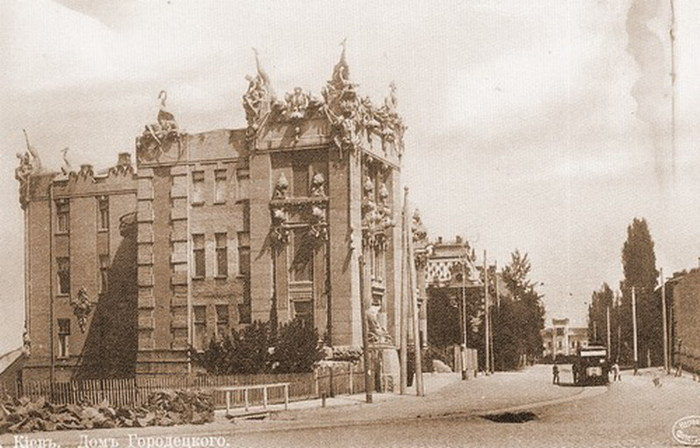

Дом с химерами был построен по проекту архитектора Владислава Городецкого в 1901—1902 годах[3] с применением новаторских решений для тех времён под руководством инженера Антона Страуса. Ко времени строительства здания Городецкий был известен как крупный архитектор, разработал многие здания Киева — в частности, Костёл святого Николая, Киевскую кенассу и Национальный художественный музей Украины. Помимо архитектуры, Городецкий любил охоту, возможно, поэтому в его работах присутствует так много скульптурных изображений животных. Городецкий финансировал строительство дома на заёмные средства с намерением создать доходный дом. На каждом этаже он сформировал по одной квартире, они были связаны между собой лифтом и лестницами. Сам Городецкий занимал четвёртый этаж здания, площадь которого составляет около 380 м². Первую часть земли Городецкий купил 1 февраля 1901 года, строительные работы начались 18 марта того же года. Строительство наружных стен было завершено 21 августа, крыша и кирпичная кладка была завершена 13 сентября. В связи с экономическими трудностями в Российской империи завершение строительства было отложено. В мае 1903 года были заняты только одна квартира на нижнем этаже и собственная квартира Городецкого. Для строительства здания было использовано 1550 м² земли стоимостью 15 640 рублей[4]. Общая стоимость земли и строительства составила 133 000 рублей. Предполагаемый годовой доход от аренды составлял 7200 рублей. Слева от центрального фасада располагалась альпийская горка (площадью около 320 м²) с фонтаном. Из-за финансовых проблем, связанных с увлечением сафари, в июле 1912 года Городецкий решил заложить свой особняк Киевскому обществу взаимных кредитов.
Неспособность выплатить проценты по кредиту привела к тому, что в 1913 году усадьба с особняком была продана кредитным обществом на аукционе. Владение особняком перешло к Даниилу Балаховскому, французскому консульскому агенту в Киеве. В 1916 году дом купил купец первой гильдии Самуил Нимец.
После Октябрьской революции 1917 года здание было национализировано, а все квартиры в доме стали коммунальными. С 1921 года в здании размещался штаб военно-трудовой лесозаготовочной дружины. Позже новая власть разместила в нём Ветеринарное управление Киевского военного округа. Во время Великой Отечественной войны зданию был нанесён значительный ущерб, оно оставалось заброшенным. После войны здание использовалось как жильё актёров театра имени Ивана Франко. Затем ЦК КП(б)У распорядился использовать здание в качестве поликлиники № 1 для членов ЦК КП(б)У.
После распада СССР здание принадлежало Министерству здравоохранения Украины. Со временем сваи утратили свою опорную функцию, и в месте стыковки ленточного и свайного фундаментов дом раскололся на две части. Одна часть дома наклонилась в сторону резиденции Президента Украины на 33 см, а вторая — в сторону театра имени Ивана Франко на 10 см. Потребовалась срочная реконструкция здания. В 1998 году институтом «УкрНИИпроектреставрация» был разработан проект реконструкции «Дома с химерами».
В конце 2003 года Кабинет министров Украины утвердил разработанный институтом план реконструкции здания. В ходе реставрационных работ рабочие раскопали первый этаж, который был засыпан землёй с целью укрепления. По сохранившимся старым чертежам Городецкого восстановили интерьер и росписи на стенах. Восстановили свайное поле, но выправлять дом, который наклонился более чем на 30 см в сторону Банковой реставраторы не стали, выпрямить дом означало бы, что его перестраивают, а не реставрируют. Чтобы вмонтировать окна в перекосившиеся от времени стены, мастерам пришлось изготовить кривые оконные рамы. Во дворе мастера восстановили искусственное озеро, фонтаны и сад с альпийской горкой. В ноябре 2004 года в здании был открыт музейно-культурный центр «Художественные шедевры Украины». После ремонта три этажа здания (третий, четвёртый и пятый) были переоборудованы под помещения для проведения мероприятий с участием Президента Украины. На первом и втором этажах резиденции расположены служебные кабинеты работников государственного протокола и церемониала президентского секретариата. В доме с химерами также имеются зал для вручения верительных грамот, правительственный зал для подписания документов, малый зал для переговоров, зал, где Президент Украины проводит встречи «тет-а-тет», помещения для брифингов и комната для проведения торжественных праздничных приёмов
Дом построен в стиле модерн и спроектирован в форме куба, со стороны Банковой улицы он имеет три этажа, а со стороны площади Ивана Франко — шесть. В свободной планировке использован принцип функциональной взаимосвязи изолированных групп помещений (парадных, жилых, хозяйственных), что свойственно многим жилым домам XX века.
В настоящее время исследователи архитектуры стиля модерн значительное внимание уделяют интерпретации иконографических мотивов. Дом арх. Городецкого, богато декорированный и украшенный двумя скульптурными группами, в этом отношении является благодатным объектом для исследований. В книге «Киев в стиле модерн» основываясь на индивидуальных предпочтения автора и владельца дома В. Городецкого, охотника, мечтавшего, как раз в период строительства своего дома, о путешествии в Африку и проанализировав декор главных фасадов дома пришли к выводу, что Владислав Городецкий построил в центре Киева африканский горный массив с горным озером на его вершине и водопадом омывающем ступени парадного подъезда. Об африканском вельде говорят многочисленные слоны, газели и носороги на фасадах дома. Рыболовецкие снасти на углу дома Городецкого, ряска на фризе и девушки с рыбами наводят на мысль об озерной глади, да и калла, цветок которым украшены стены дома, растение африканское, растущее вдоль берегов рек. Открыв дверь парадного подъезда и войдя в фойе дома посетитель оказывался на дне озера. Осьминог спускающийся с потолка и рыбы в межкомнатном пространстве создают нужное впечатление. Даже само расположение дома — над обрывом, должно было по замыслу Городецкого усиливать впечатление: дома — африканская гора. Во время работы над этим разделом были использованы материалы из книги Киев в стиле модерн Скульптурные украшения фасада по собственным эскизам Городецкого выполнил его помощник, миланский скульптор Элио Саля, оставивший свою подпись «E. Sala. 1902» под скульптурной композицией борьбы львицы и орла.
В свободной планировке дома использован принцип функциональной взаимосвязи изолированных групп помещений (парадных, жилых, хозяйственных), что характерно для богатых домов начала XX века. Расположение комнат в доме — веером, по ходу солнца, что создавало условия для хорошего естественного освещения. Общая площадь здания составляет 3 309,5 м². На первом этаже со стороны площади Ивана Франка размещались две конюшни, две комнаты для кучеров, общая прачечная и две квартиры — двух- и трёхкомнатная. Каждая из двух квартир состоит из прихожей, кухни, ванной комнаты и кладовой. На этажах, расположенных выше первого, располагалось по одной квартире. На втором этаже квартира состояла из шести жилых комнат, вестибюля, кухни, буфета, трёх комнат для прислуги, одной ванной комнаты, двух туалетов и двух кладовых. На третьем и шестом этаже располагались квартиры из восьми жилых комнат, в них имелись прихожая, кухня, прачечная, две комнаты для прислуги, ванная комната и два туалета. Квартира на третьем этаже располагалась несколько ниже уровня главного входа со стороны Банковской улицы. Лучшая квартира, с тринадцатью комнатами, на четвёртом этаже со стороны площади Ивана Франко (на первом со стороны Банковой улицы), принадлежала самому Городецкому. Она состояла из кабинета, гостиной, малой гостиной, столовой, будуара, спальни, детской, комнаты для гувернантки, запасной комнаты, прихожей, трёх комнат для прислуги, посудомоечной, коридора, кухни, ванной, двух туалетов и двух кладовых. Такая же квартира находилась этажом выше. Помимо квартир, конюшни, прачечной и кладовых, в доме были винные погреба и коровник, Городецкий хотел каждый день поить своих жильцов свежим молоком. Расположение коровника было подобрано таким образом, чтобы запах не доставлял жильцам неудобств.
Внешний вид «Дома с химерами» породил ряд легенд, которые можно встретить в газетах и путеводителях. Согласно первой легенде, Городецкий построил этот дом в память о своей дочери, которая покончила жизнь самоубийством, бросившись в воды Днепра то ли из-за семейной ссоры, то ли из-за несчастной любви, от этого в оформлении так много морских мотивов. Однако, как было установлено, Елена Городецкая (в замужестве Яценко) во время строительства дома была жива и здорова и умерла гораздо позже своего отца. Вторая легенда гласит, что Городецкий построил дом, заключив с известными архитекторами Александром Кобелевым и Владимиром Леонтовичем пари, что он за два года сможет построить здание, используя новые по тем временам материалы: цемент и бетон. Через два года Городецкий представил архитекторам свой дом и выиграл пари. Согласно третьей легенде, перед тем как покинуть дом, Городецкий наложил на него проклятие. Якобы все жильцы особняка будут несчастливы, и только лишь потомки Городецкого смогут беспрепятственно уживаться с химерами. Сторонники этой версии указывают на то, что конторы, владевшие здесь помещениями либо арендовавшие их, банкротились — их фонды таинственно исчезали, организации расформировывались. Также существует легенда, согласно которой дом строил не Городецкий, а Николай Добачевский. Эта легенда опровергается тем, что на всех чертежах дома стоит подпись Городецкого.
назад